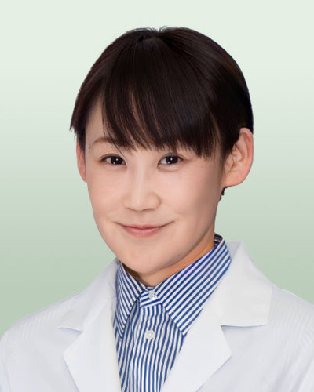

国内初の吸収性軟骨再生用材料
「モチジェル®」による軟骨修復治療
北海道大学病院と持田製薬が共同開発した「モチジェル®」が、保険診療で使用可能となりました。膝関節・肘関節の軟骨欠損に対する、新たな治療選択肢です。
新しい軟骨再生治療
関節軟骨損傷に対する新たな治療選択肢として、国内初の吸収性軟骨再生用材料「モチジェル®」が保険診療で使用可能となりました。骨髄刺激法と組み合わせることで、低侵襲に軟骨再生を促進します。
軟骨再生用材料
使わない
が不要
治療の流れProcedure

欠損部の確認・廓清
軟骨欠損の範囲を確認し、変性した軟骨を廓清します。

骨髄刺激（ドリリング）
軟骨下骨に小孔を作成し、骨髄由来の細胞を欠損部へ動員します。

モチジェル®注入・固定
欠損部にモチジェル®を充填・固定し、軟骨再生の場を確保します。
欠損部で起きていることMechanism


臨床試験で示された有効性と安全性

本邦で実施された臨床試験では、膝関節・肘関節の軟骨損傷を対象に、疼痛・機能評価とあわせて、MRIおよび関節鏡による軟骨修復の状態や有害事象の発現状況を評価しました。
このような患者さんに最適です
- スポーツ外傷による軟骨損傷
- 離断性骨軟骨炎
- 保存治療で改善しない軟骨欠損
- 変形性関節症へ進行する前に
適応の判断も含めて対応いたしますので、お気軽にご相談ください。


軟骨欠損は早期治療が重要です。早い段階でご紹介いただくことで、変形性関節症への進行抑制が期待できます。ぜひ気軽にご相談ください。
スポーツ医学診療センターのご紹介
上肢・下肢・股関節・脊椎、それぞれの領域の専門医が分担して診察しています。
外来担当医Schedule
主な対象疾患
靭帯損傷・捻挫・肉離れ・打撲などの外傷から、野球肩・野球肘・テニス肘・ジャンパー膝・疲労骨折といった慢性障害まで対応します。



hokudaiorthop@med.hokudai.ac.jp
事前にお電話でご連絡いただけますと、より円滑にご案内できます。
整形外科 医師一覧
脊椎・上肢・下肢・股関節・腫瘍の各領域に専門医を配置し、運動器疾患を横断的に診療しています。ご紹介の際に、担当医をご指定いただくこともできます。


「スポーツ医学診療センター」：近藤 英司 教授・筌場 大介 助教・清水 智弘 講師
予約方法のご案内
- 氏名
- 受診希望の診療科
- 性別
- 北大病院の受診
- 生年月日
- 紹介元医療機関
- 連絡先（住所・電話番号）
- 紹介状に記載の宛名
ID-Linkによる診療情報共有サービス（ICT連携）のご案内
当院では、患者さんの診療情報を共有する地域医療連携ネットワークサービス「ID-Link」を導入しております。地域の医療機関の皆さまへの情報提供を開始いたしましたので、お知らせします。また、ID-Linkを通じた情報共有を推進しており、連携機関の拡充を図っております。
当院へご紹介いただいております患者さんの診療情報の参照を希望される場合は、右の申請フォームよりご申請くださいますよう、お願い申し上げます。なお、詳細につきましては、当院地域医療連携福祉センターのHPよりご確認ください。